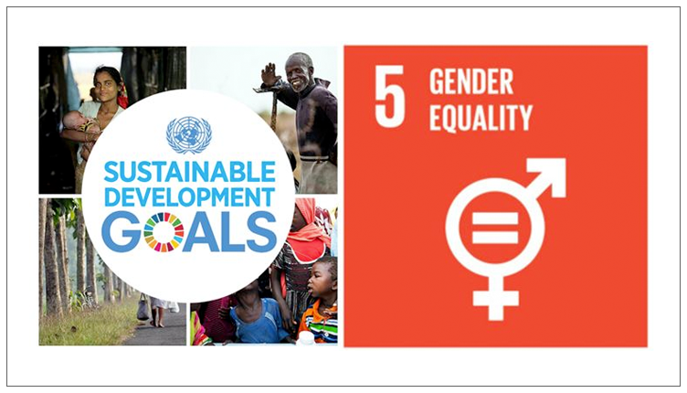
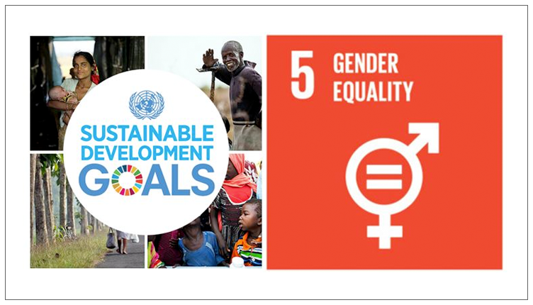

Kesetaraan gender merupakan salah satu tujuan penting dalam SDGs yang bertujuan menghapus diskriminasi, kekerasan, dan ketidakadilan berbasis gender, serta memastikan akses yang setara terhadap pendidikan, pekerjaan, dan partisipasi politik bagi semua individu. Indonesia, melalui kerja sama internasional, baik bilateral, regional, maupun multilateral, berperan aktif dalam upaya global untuk mencapai tujuan ini. Dengan kolaborasi bersama negara-negara seperti Australia, Jepang, dan anggota ASEAN, Indonesia dapat berbagi pengalaman, mengakses sumber daya, dan memperkuat kebijakan yang mendukung pemberdayaan perempuan. Kerja sama ini tidak hanya berdampak pada individu tetapi juga berkontribusi terhadap stabilitas dan kemajuan sosial-ekonomi dunia. Melalui upaya yang konsisten dan terarah, Indonesia dan komunitas global dapat mewujudkan dunia yang lebih adil, inklusif, dan setara bagi semua.
Sebagai refleksi, membuat website dengan tema SDGs tentang kesetaraan gender dan kerja sama internasional Indonesia merupakan pengalaman yang sangat berharga dan penuh tantangan. Proses ini tidak hanya melibatkan keterampilan teknis dalam menggunakan HTML dan CSS, tetapi juga pemahaman yang mendalam tentang isu-isu global yang relevan. Selama proses pembuatan, saya menghadapi beberapa tantangan, seperti mengatur tata letak halaman agar rapi dan responsif. Salah satu tantangan teknis terbesar adalah menyesuaikan gambar dan teks agar tampak seimbang dan tidak mengganggu kenyamanan membaca. Namun, melalui percobaan dan bantuan dari berbagai sumber referensi, saya berhasil mengatasi masalah tersebut dengan cara mempelajari kembali modul-modul yang pernah diberikan.
Kolaborasi ini menunjukkan bahwa kerja sama internasional adalah elemen penting dalam memperkuat upaya nasional untuk mencapai tujuan SDGs, terutama dalam isu-isu krusial seperti kesetaraan gender. Dengan sinergi lintas negara, Indonesia dapat berkontribusi pada pembangunan global yang lebih inklusif dan berkelanjutan. Semua sumber yang digunakan untuk web kolaborasi ini sangat dapat dipercaya dan terbukti akurat.
Saran untuk mempercepat pencapaian kesetaraan gender di Indonesia adalah dengan memperkuat kolaborasi internasional, terutama dalam berbagi kebijakan dan program pemberdayaan perempuan melalui platform seperti ASEAN dan PBB. Selain itu, Indonesia perlu meningkatkan perlindungan hukum bagi perempuan dan memastikan akses yang setara dalam pendidikan serta pekerjaan.

 
